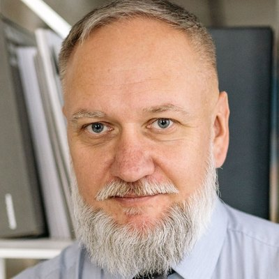

¿Alguna vez se te pasó un regalo?
54%
compró el regalo del Día de la Madre con menos de una semana.
Logisfashion 2026 · CNC 2025

Marcela, 58
Se le olvidalo que vio y dónde
Andrés, 52
Se le olvidaque la fecha se acercaFelipe, 34
Se le olvidala fechaNecesito ayuda, sin que sea una carga.
De un regalo suelto a los regalos del año.
Por qué le sirve a Creado
Más compras en la webCompra recurrenteCompra anticipada.
1/12